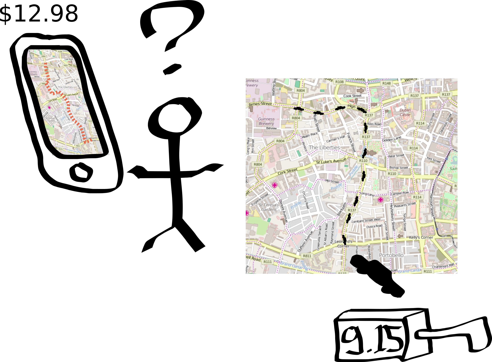
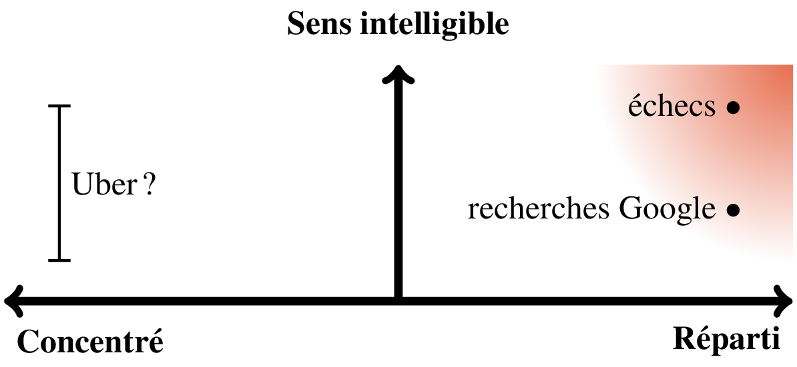

class: center, middle <style> .ev01{ margin-bottom:80px; } </style> # Le bien commun à l'ère des algorithmes ### Décembre 2020 <div class="ev01"></div> ## Mathieu Bergeron ### <a target="_blank" href="https://coderatie.org">coderatie.org</a> <div class="ev01"></div> <a ref="" href="https://creativecommons.org/licenses/by-sa/4.0/deed.fr" class="icon"> </a> <a ref="" href="https://creativecommons.org/licenses/by-sa/4.0/deed.fr" class="icon"> <img alt="Creative Commons License" style="border-width:0" src="by.svg" width="46px" class="icon"/></a> <a ref="" href="https://creativecommons.org/licenses/by-sa/4.0/deed.fr" class="icon"> <img alt="Creative Commons ShareAlike" style="border-width:0" src="sa.svg" width="46px" class="icon"/></a> <a ref="" href="https://creativecommons.org/licenses/by-sa/4.0/deed.fr"><!--Creative Commons<br>-->Attribution - Partage dans les Mêmes Conditions</a><!--<br>4.0 International</a>--> --- # Plan <style> .ev02{ margin-bottom:0px; padding-bottom:20px; } </style> 1. Angoisse face à l'IA: les échecs dans les années 1990 <div class="ev02"></div> 1. L'angoisse se répand: Google, Facebook, Amazon, Uber, etc. <div class="ev02"></div> 1. Quelques pensées réconfortantes <div class="ev02"></div> 1. Imaginer une informatique du bien commun: * Partager le <span style="position:relative;left:8px;padding-left:5px;padding-right:5px;"class="sens">sens</span> * Partager la <span style="position:relative;left:8px;padding-left:5px;padding-right:5px;" class="liberte">liberté</span> * Partager les <span class="revenus" style="padding-left:5px;padding-right:5px;">revenus</span> <div class="ev02"></div> <div class="ev02"></div> 1. L'éducation: la clé pour réussir la transition vers l'IA --- class: center, middle # Les échecs dans les années 1990 --- # Un vent d'inquiétude <br> <table> <tr> <td style="text-align:center;"> <img src="echiquier_electronique.jpg" width="80%"/> </td> <td> <img src="graphes/joueurs1990.png" width="100%"/> </td> </tr> <tr> <td style="text-align:center;"> <a target="_blank" href="https://fr.wikipedia.org/wiki/Programme_d%27%C3%A9checs">fr.wikipedia.org/wiki/Programme_déchecs</a> </td> <td></td> </tr> </table> --- # L'humanité s'avoue vaincue <table> <tr> <td style="text-align:center;"> <img src="deep_blue.jpg" width="100%"/> </td> <td style="text-align:center;"> </td> </tr> <tr> <td style="text-align:center;"> <a target="_blank" href="https://fr.wikipedia.org/wiki/Deep_Blue">fr.wikipedia.org/wiki/Deep_Blue</a> </td> <td style="text-align:center;"> <a style="font-size:80%;" target="_blank" href="https://chess24.com/en/read/news/man-vs-machine-a-poet-on-kasparov-deep-blue">chess24.com/en/read/news/man-vs-machine-a-poet-on-kasparov-deep-blue</a> </td> </tr> </table> --- # Et la suite selon vous?... <img src="graphes/joueursABC.png" width="100%"/> --- # L'IA a-t-elle soutenu cet essor? <img src="graphes/joueursReel.png" width="100%"/> --- # L'IA aux échecs <br> <table> <tr style="width:100%;" class="sens"> <th style="width:80%;padding-left:20px;padding-top:40px;padding-bottom:40px;text-align:left;">1. Permet d'apprendre </th> <td style="width:02%;vertical-align:middle;text-align:center"> Sens </td> </tr> <tr style="width:100%;" class="liberte"> <th style="width:80%;padding-left:20px;padding-top:40px;padding-bottom:40px;text-align:left;">2. Est contrôlable et modifiable </th> <td style="width:02%;vertical-align:middle;text-align:center"> Liberté </td> </tr> <tr style="width:100%;" class="revenus"> <th style="width:80%;padding-left:20px;padding-top:40px;padding-bottom:40px;text-align:left;">3. N'a pas mené à une concentration de la richesse </th> <td style="width:02%;padding-left:10px;padding-right:10px;vertical-align:middle;text-align:center"> Revenus </td> </tr> </table> <br> * Les échecs l'ont échappé belle! --- class: center, middle # L'angoisse revient en force ## La montée de la nouvelle IA et des plateformes --- # Qu'est-ce que la nouvelle IA? * L'IA traditionnelle manipule des représentations explicites du sens * souvent dans une notation spécialisée conçue par des humains <br> * La nouvelle IA est basée sur l'apprentissage machine * les humains choisissent les données et l'objectif à accomplir * la machine construit un modèle statistiques des données * le sens tiré des données n'est pas intelligible <br> * La nouvelle IA est parfois comparée à l'alchimie: * on sait que ça fonctionne, mais on ne sait pas pourquoi! --- <style> .evA{ margin-bottom:0px; padding-bottom:10px; } </style> # Qu'est-ce qu'une plateforme? * Une technologie devenant incontournable pour une activité humaine * Google pour la recherche d'information * Facebook pour la socialisation <div class="evA"></div> * S'installer comme plateforme est l'objectif avoué des <i>startups</i> * perturber un domaine d'activité afin de régner sur ce qu'il en restera <div class="evA"></div> * Les plateformes ont un pouvoir d'influence inouï: * sur notre <span class="sens" style="padding:5px;">imaginaire visuel</span> (p.ex. images Google) * sur nos <span class="liberte" style="padding:5px;">choix personnels</span> (de lecture, de visionnement, etc.)... * ...<span class="liberte" style="padding:5px;">et politiques</span> (p.ex. le scandale Cambridge Analytica) * sur la <span class="revenus" style="padding:5px;">valeur de certaines activités</span> (p.ex. la traduction) --- # Des inquiétudes bien fondées <style> .ev03{ margin-bottom:0px; padding-bottom:20px; } .ev03a{ margin-bottom:0px; padding-bottom:5px; } </style> * La nouvelle IA et les plateformes fonctionnent en symbiose: * la plateforme siphonne les données * les données permettent d'améliorer l'IA * l'IA fait croître la plateforme en automatisant des tâches humaines <div class="ev03"></div> * Cette dynamique menace: <table> <tr style="width:100%;" class="sens"> <th style="width:80%;padding-left:20px;padding-top:20px;padding-bottom:20px;text-align:left;">La capacité des humains à comprendre eux-mêmes le monde </th> <td style="width:02%;vertical-align:middle;text-align:center"> Sens </td> </tr> <tr style="width:100%;" class="liberte"> <th style="width:80%;padding-left:20px;padding-top:20px;padding-bottom:20px;text-align:left;">L'intégrité de nos choix politiques </th> <td style="width:02%;vertical-align:middle;text-align:center"> Liberté </td> </tr> <tr style="width:100%;" class="revenus"> <th style="width:80%;padding-left:20px;padding-top:20px;padding-bottom:20px;text-align:left;">La stabilité de nos économies </th> <td style="width:02%;padding-left:10px;padding-right:10px;vertical-align:middle;text-align:center"> Revenus </td> </tr> </table> --- # *Upfront pricing* du service de taxi Uber <br> <center>  </center> <span style="font-size:75%">carte: <a href="https://commons.wikimedia.org/wiki/File:Open_street_map_central_dublin.svg">commons.wikimedia.org/wiki/File:Open_street_map_central_dublin.svg</a></span> --- # *Upfront pricing* est tristement typique <br> <table> <tr style="width:100%;" class="sens"> <th style="width:80%;padding-left:20px;padding-top:40px;padding-bottom:40px;text-align:left;">1. Aucune explication de ce qui motive le prix estimé </th> <td style="width:02%;vertical-align:middle;text-align:center"> Sens </td> </tr> <tr style="width:100%;" class="liberte"> <th style="width:80%;padding-left:20px;padding-top:40px;padding-bottom:40px;text-align:left;">2. Impossible d'expérimenter avec l'algorithme </th> <td style="width:02%;vertical-align:middle;text-align:center"> Liberté </td> </tr> <tr style="width:100%;" class="revenus"> <th style="width:80%;padding-left:20px;padding-top:40px;padding-bottom:40px;text-align:left;">3. Maximisation des revenus (sauf pour les conducteurs) </th> <td style="width:02%;padding-left:10px;padding-right:10px;vertical-align:middle;text-align:center"> Revenus </td> </tr> </table> --- class: center, middle # Quelques pensées réconfortantes --- # Des enjeux aujourd'hui bien visibles <br> * Regain d'intérêt pour une informatique plus humaine <br> * Recherches sur l'éthique des algorithmes <br> * Recherches sur l'IA intelligible --- # L'IA est typiquement surestimée <br> * Les résultats sont très impressionnants, p.ex. * échecs, * go * génération de textes * repliement des protéines * détection de tumeurs (radiologie) <br> * Mais l'IA n'est pas générale * il faut faire une IA pour chaque problème <br> * Les systèmes demeurent hybrides * l'IA est une composante parmi d'autres --- # La lenteur des changements profonds <br> * L'adoption d'une technologie peut prendre du temps * p.ex. la culture de la conduite Vs les voitures autonomes <br> * Il est encore temps d'agir! <br> * L'éducation des générations futures fera la différence: * pour influencer le genre d'IA que l'humanité va créer * pour préparer la société à la cohabitation avec l'IA --- class: center, middle # Imaginer une informatique du bien commun --- # Différencier les algorithmes <br> <table> <tr> <th style="width:250px"> </th> <th style="width:250px;text-align:center;">Algorithmes d'échecs </th> <th style="width:250px;text-align:center"><i>Upfront pricing</i> </th> </tr> <tr class="sens"> <th style="padding-top:40px;padding-bottom:40px;text-align:center;">Portée pédagogique </th> <td style="vertical-align:middle;text-align:center"> Explications intelligibles </td> <td style="vertical-align:middle;text-align:center"> Nulle </td> </tr> <tr class="liberte"> <th style="padding-bottom:40px;padding-top:40px;text-align:center;">Contrôle démocratique</th> <td style="vertical-align:middle;text-align:center"> Via le code source </td> <td style="vertical-align:middle;text-align:center"> Aucun </td> </tr> <tr class="revenus"> <th style="padding-bottom:40px;padding-top:40px;text-align:center;">Impact économique</th> <td style="vertical-align:middle;text-align:center;"> Réparti <i>ad hoc</i> </td> <td style="vertical-align:middle;text-align:center"> Iniquité programmée </td> </tr> </table> --- # <span class="sens" style="padding:5px;">Partager le sens</span> <br> <br> <center>  </center> --- # <span class="liberte" style="padding:5px;">Partager la liberté</span> <br> <br> <center> </center> --- # <span class="revenus" style="padding:5px;">Partager les revenus</span> <br> <br> <center> </center> --- class: center, middle # La codératie ## Réussir la transition vers l'IA --- # Qu'est-ce que la codératie? <br> * La codératie est la capacité à comprendre et modifier le code source * c'est la compétence de programmation informatique <br> * Ça va au delà de la littératie numérique, qui se limite à l'utilisation d'outils <br> * La codératie concerne plutôt la modification et la création de programmes <br> * La tendance est déjà d'enseigner la programmation de façon plus générale * p.ex. dans le nouveau programme collégial de sciences de la nature --- # La codératie à la rescousse? * Avec un taux de codératie élevé, l'informatique serait très différente: * respect de la vie privée * rejet des tactiques d'exploitation économique * collaboration à large échelle pour améliorer les outils <br> * La codératie encourage l'adoption du *logiciel libre* * 27% des programmeurs utilisent Linux (contre 1% en général) <br> * Accéder au code source permet de vérifier: * qu'un algorithme fonctionne tel qu'annoncé * qu'un programme ne cache pas de comportements malicieux --- # Fortifier la démocratie <br> * L'informatique se doit d'être plus représentative * p.ex. 90% des programmeurs sont des hommes <br> * La liberté informatique doit fonctionner comme la liberté de presse * faire contrepoids aux plateformes * faire pression pour des algorithmes éthiques et équitables <br> * Pour ce faire il faudra: * enseigner la programmation à tous les enfants * légiférer pour augmenter significativement l'accès au code source --- # En conclusion * La montée de l'IA et des plateformes est très inquiétante * mais il est encore temps d'agir! <br> * Une informatique du bien commun redistribuerait: * <span class="sens" style="padding:5px;"> le sens</span>: les nouvelles connaissances qu'elle permet * <span class="liberte" style="padding:5px;">la liberté</span>: un contrôle démocratique à travers le code source * <span class="revenus" style="padding:5px;">les revenus</span>, selon des algorithmes éthiques et équitables <br> * Il faut promouvoir la codératie: * enseigner la programmation à tous les enfants * légiférer pour augmenter significativement l'accès au code source --- class: center, middle <style> .ev10{ margin-bottom:55px; padding-bottom:55px; } .td-image{ padding-right:30px; } </style> # Le bien commun à l'ère des algorithmes ### Article publié dans Liberté N<sup>o</sup> 329, novembre 2020 <div class="ev10"></div> # Merci! <div class="ev10"></div> # <a target="_blank" href="https://coderatie.org">coderatie.org</a> ### Plaidoyer pour une *véritable* démocratisation de l'informatique